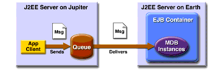

An Application Example That Consumes Messages from a Remote J2EE Server
This section and the following section explain how to write, compile, package, deploy, and run a pair of J2EE applications that run on two J2EE servers and that use the JMS API to interchange messages with each other. It is a common practice to deploy different components of an enterprise application on different systems within a company, and these examples illustrate on a small scale how to do this for an application that uses the JMS API.
However, the two examples work in slightly different ways. In this first example, the deployment information for a message-driven bean specifies the remote server from which it will consume messages. In the next example, the same bean is deployed on two different servers, so it is the client application that specifies the servers (one local, one remote) to which it is sending messages.
This first example divides the example in Chapter 28 into two applications: one containing the application client, and the other containing the message-driven bean.
This section covers the following topics:
You will find the source files for this section in
<INSTALL>/j2eetutorial14/examples/jms/consumeremote/. Path names in this section are relative to this directory.Overview of the Applications
Except for the fact that it is packaged as two separate applications, this example is very similar to the one in Chapter 28:
The basic steps of the applications are as follows.
- The administrator starts two J2EE servers, one on each system.
- On the remote server, the administrator deploys the client application.
- On the local server, the administrator deploys the message-driven bean application, which uses a connection factory that specifies the remote server where the client is deployed.
- The client application sends three messages to a queue.
- The message-driven bean consumes the messages.
Figure 34-3 illustrates the structure of this application. You can see that it is almost identical to Figure 28-1 except that there are two J2EE servers. The queue used is the one on the remote server; the queue must also exist on the local server for JNDI lookups to succeed.

Figure 34-3 A J2EE Application That Consumes Messages from a Remote Server
Writing the Application Components
Writing the components of the applications involves
The application client,
jupiterclient/src/SimpleClient.java, is almost identical to the one in The Application Client.Similarly, the message-driven bean,
earthmdb/src/MessageBean.java, is almost identical to the one in The Message-Driven Bean Class.The only major difference is that the client and the bean are packaged in two separate applications.
Creating and Packaging the Applications
For this example, the message-driven bean uses the connection factory named
jms/JupiterConnectionFactory, which you created in Creating Administered Objects for Multiple Systems. Use the Admin Console to verify that the connection factory still exists and that itsAddressListproperty is set to the name of the remote system.The application client can use any connection factory that exists on the remote server; you created
jms/JupiterConnectionFactoryon that server, so you can use that. Both components use the queue namedjms/Queue, which you created in Creating JMS Administered Objects.We'll assume, as we did in Running JMS Client Programs on Multiple Systems, that the two servers are named
earthandjupiter.Creating and packaging this application involve five steps:
You can package the applications yourself as an exercise. Use the
asantbuildtargets in thejupiterclientandearthmdbdirectories to compile the source files.This section uses the prepackaged EAR files to show how to create and package the applications.
Which system you use to package and deploy the applications and which system you use to run the client depend on your network configuration--which file system you can access remotely. These instructions assume that you can access the file system of
jupiterfromearthbut cannot access the file system ofearthfromjupiter. (You can use the same systems forjupiterandearththat you used in Running JMS Client Programs on Multiple Systems.)The Application Server must be running on both systems.
You can package both applications on
earthand deploy them from there. The only action you perform onjupiteris running the client application.Examining the Applications
- In
deploytool, onearth, open the two EAR filesJupiterClientApp.earandEarthMDBApp.ear, which reside in the directory<INSTALL>/j2eetutorial14/jms/provided-ears.- In
JupiterClientApp.ear, select the application client node,SimpleClient.
- Click the Resource Ref's tab. The client uses the connection factory
jms/JupiterConnectionFactoryto send messages to a queue. The application looks up the coded namejms/MyConnectionFactoryand casts the object to an object of typejavax.jms.ConnectionFactory.- Click the Msg Dest Ref's tab. The coded name
jms/QueueNamerefers to the target destinationPhysicalQueue. Its type isjavax.jms.Queue, and its usage is set to Produces.- Click the Message Destinations tab, and then click
PhysicalQueue. The client appears in the Producers area. It refers to the JNDI namejms/Queue.- In
EarthMDBApp.ear, expand theMDBJARnode and selectMessageBean.- Select the
MDBJARnode, click the Message Destinations tab, and then clickPhysicalQueue. The message-driven bean appears in the Consumers area. The destination refers to the JNDI namejms/Queue.- Select the
EarthMDBAppnode and click Sun-specific Settings on the General page. The JNDI name for the message-driven bean is the queue destination resource,jms/Queue.The JNDI name for the
EarthMDBAppapplication should appear as shown in Table 34-5. Only the Application pane has any content.
MessageBeanjms/Queue
The JNDI name for the
JupiterClientAppapplication should appear as shown in Table 34-6. Only the References pane has any content.
SimpleClientjms/MyConnectionFactoryjms/JupiterConnectionFactory
Deploying the Applications
To deploy the
EarthMDBAppapplication, perform the following steps:Before you can deploy the
JupiterClientAppapplication, you must add the remote server. Onearth, perform the following steps:
- Choose File
Add Server.
- Type the name of the remote system in the Server Name field.
- Click OK.
- The server appears in the tree under Servers. Select it.
- In the Connect to Server dialog box that appears, type the administrative user name and password for the server in the Connection Settings area, and click OK.
To deploy the
JupiterClientAppapplication and save the client JAR file, perform the following steps:
- Make the remote server the current target server:
- Save the application.
- Choose Tools
- Type your administrative user name and password (if they are not already filled in).
- In the Application Client Stub Directory area, select the Return Client Jar checkbox.
- Choose Browse to navigate to the directory on the remote system (
jupiter) from which you will run the client. When you reach the directory, click Select, and then click OK.- Click OK.
- In the Distribute Module dialog box, click Close when the process completes. You will find a file named
JupiterClientAppClient.jarin the specified directory.Running the Application Client
To run the client, perform the following steps:
On
jupiter, the output of theappclientcommand looks like this:Sending message: This is message 1 Sending message: This is message 2 Sending message: This is message 3On
earth, the output in the server log looks something like this (wrapped in logging information):In MessageBean.MessageBean() In MessageBean.setMessageDrivenContext() In MessageBean.ejbCreate() MESSAGE BEAN: Message received: This is message 1 MESSAGE BEAN: Message received: This is message 2 MESSAGE BEAN: Message received: This is message 3Undeploy the applications after you finish running the client.
All of the material in The J2EE(TM) 1.4 Tutorial is copyright-protected and may not be published in other works without express written permission from Sun Microsystems.